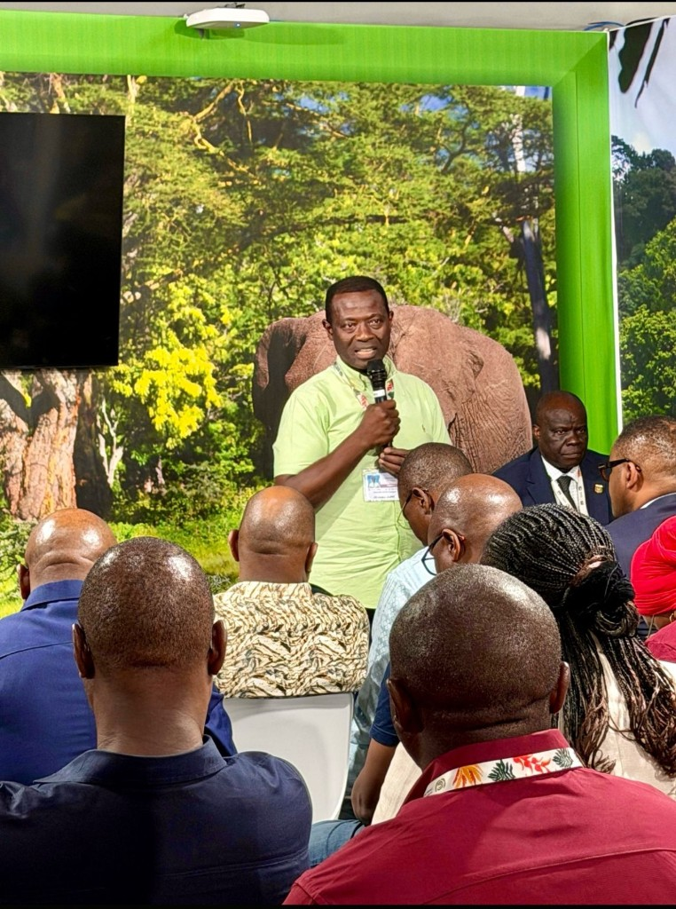
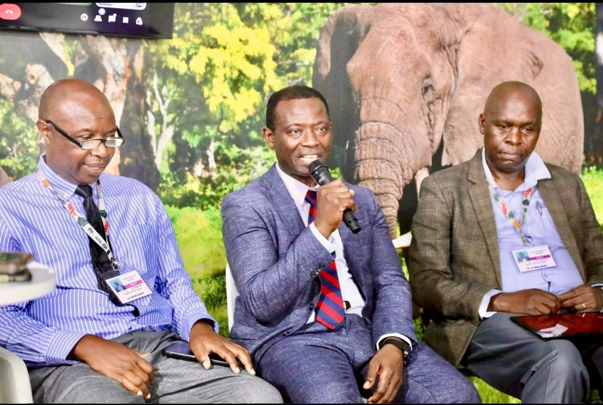
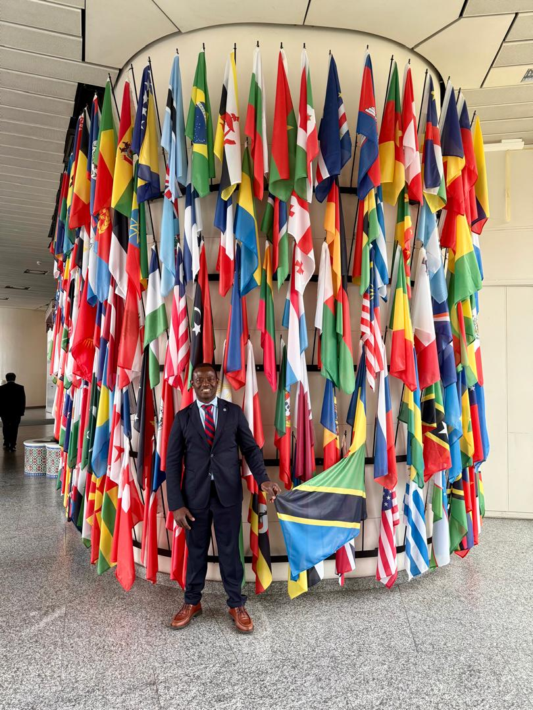
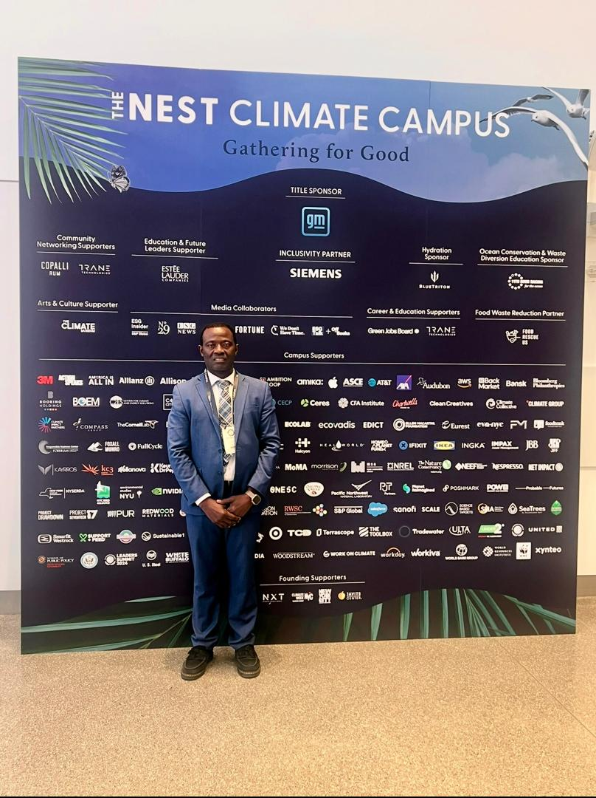
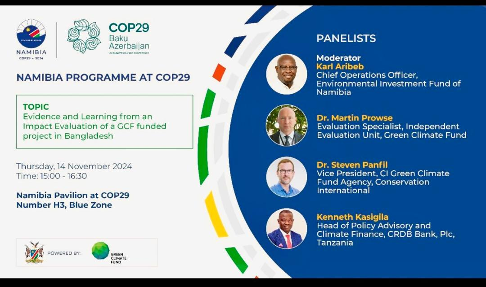
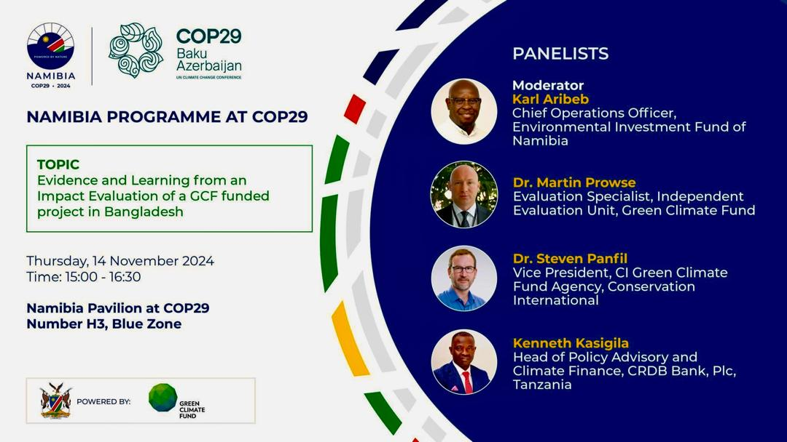
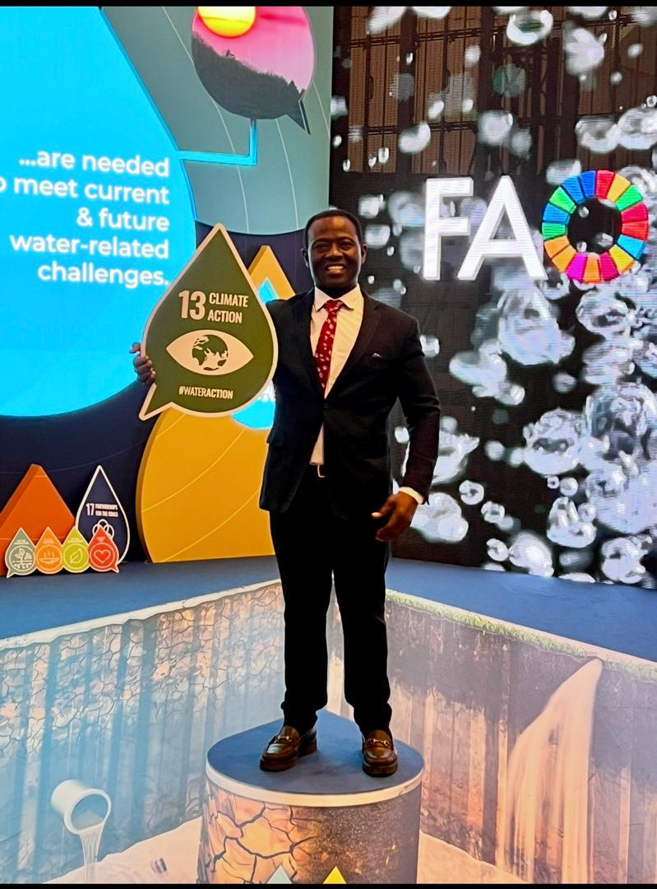

Home / COP Engagements
Africa Climate Finance at global climate negotiations.
Africa Climate Finance participates in global climate forums and UN climate summits (COP). Our engagements at these negotiations shape policy dialogue, advance climate finance mechanisms, and strengthen partnerships with international funds and development institutions.
November 2025 · Most recent
COP30 Brazil: Belém 2025

COP30
Tanzania leads Africa’s call for climate justice

Belém, Brazil
UN Climate Change Conference

Food & Agriculture Pavilion
Action on Food, COP30
A financial mandate for the green decade
This global summit confirmed a profound shift, establishing explicit, massive financial targets that define the next decade of green investment and create an unprecedented mandate for the financial sector. Leading African financial institutions were well represented, showcasing their commitment to the global climate agenda.
The key outcomes include:
These figures underscore the transition of climate action from a passive risk concern to a primary investment strategy for the financial sector, offering both systematic risk mitigation and major, high-growth opportunities across global markets.
Climate finance shifting from risk mitigation to primary investment strategy, with the African private sector increasingly driving climate resilience investments.
The dialogue on climate adaptation in Africa at COP30




Transformative approaches for adaptation planning in Africa: experiences and lessons
Kenneth Kasigila participated at COP30 in Belém, Brazil, in the high-level panel hosted by the Global Center on Adaptation (GCA) and CGIAR at the Food & Agriculture Pavilion (PV-E170, Blue Zone) on Tuesday, 11th November 2025. The session demonstrated how the African private sector is actively embedding climate resilience into its core strategy, moving beyond planning to accelerate tangible investments that safeguard food security and protect livelihoods across the continent.
View session on LinkedIn · Additional context on LinkedIn
On green taxonomy and Tanzania
The participation in the COP30 discussion highlighted the operational difficulties of creating green products when a national taxonomy is missing. This requires issuers to undertake the complex and resource-intensive task of building an unwritten, self-imposed green taxonomy by blending various international market principles. This fragmented approach underscores the critical need for Tanzania to transition to a harmonized national standard. Tanzania is on track to develop its own taxonomy, a vital step toward unlocking green capital efficiently.
November 2024
COP29 Azerbaijan: Baku 2024

Finance Day at the Tanzania Pavilion
At COP29, our team participated in side events hosted by the COP29 Presidency at the Tanzania Pavilion in Baku, Azerbaijan, specifically on Finance Day. This event took place as part of the Ministerial Meeting agenda of the Coalition of Finance Ministers for Climate Action, held on November 14, 2024.
Our focus was on the best practices and challenges associated with allocating and mobilizing financing for the implementation of Nationally Determined Contributions (NDCs). Kenneth Kasigila shared achievements from collaboration with MUFG Bank, as detailed in climate finance projects FP223 (total project value US$1.5B) and FP179 (total project value US$200M), plus insights on ESG strategy pursued alongside colleagues and stakeholders.
The discussions aimed to identify effective practices for coordinating diverse stakeholders and resources while ensuring alignment with strategic climate and development priorities. The insights gained inform the COP29 Action Agenda and support ongoing discussions as we move toward COP30.

Engaging with academia’s institutions at LSE
Africa Climate Finance engages with leading academic institutions such as the London School of Economics (LSE) to bridge climate finance theory and practice. Sessions like “I am a Banker, and also an Avocado Farmer!” demonstrate how finance professionals are embedding climate-smart agriculture into their work, connecting high-level policy with on-the-ground impact.
Our presence at global forums
From COP29 and the Nest Climate Campus to FAO, UNCCD, CGAP, and regional dialogues, our team participates in climate and development forums worldwide.

COP29
Mobilizing funds to keep 1.5°C within reach

Nest Climate Campus
Gathering for Good

UN Azerbaijan
I choose 1.5°C

FAO
Climate and Water Action

FAO World Food Forum
Science and Innovation

LSE
London School of Economics

UNCCD
COP16 Riyadh 2024

CGAP
Transforming Lives With Financial Inclusion

Tanzania
At global climate forums

Panel
Climate finance panel discussion

Namibia Programme
COP29 Impact Evaluation

CARICOM Pavilion